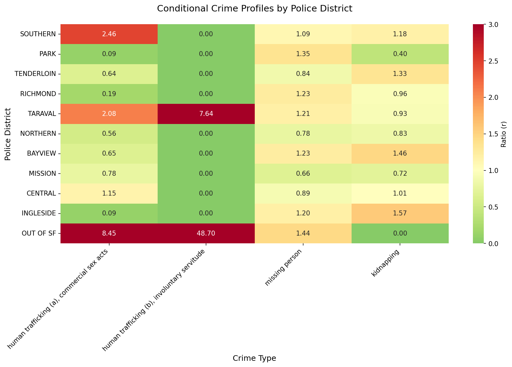

Taraval is a residential district in southwest San Francisco, known for its quiet and safe small-town feel. So why is labor trafficking reported at over 7 times the city average?
The data comes from the San Fransisco Police Departments public incident report database, covering over 20 years. It includes all reported crimes across SFPD's 10 police districts, including Southern, Mission, Northern, Park, Richmond, Ingleside, Bayview, Tenderloin, Central, and Taraval. Cases are counted by incident, not by victim, meaning multiple victims in a single incident are recorded as one data point.
While kidnapping and sex trafficking remain low, labor trafficking (forcing labor through debt or coercion) is where Taraval stands dramatically apart. Its worth noting that the data reflects reported and arrested cases only, meaning the actual number of trafficking victims in Taraval is almost certainly far higher than these numbers suggest
Figure 1 displays a heatmap of the location quotients for each crime type across the 10 police districts. Location Quotient is a measure of where specific crimes are disproportionately concentrated, compared to the average.

Figure 1: A score of 7.64 means labor trafficking is nearly eight times more concentrated in Taraval.